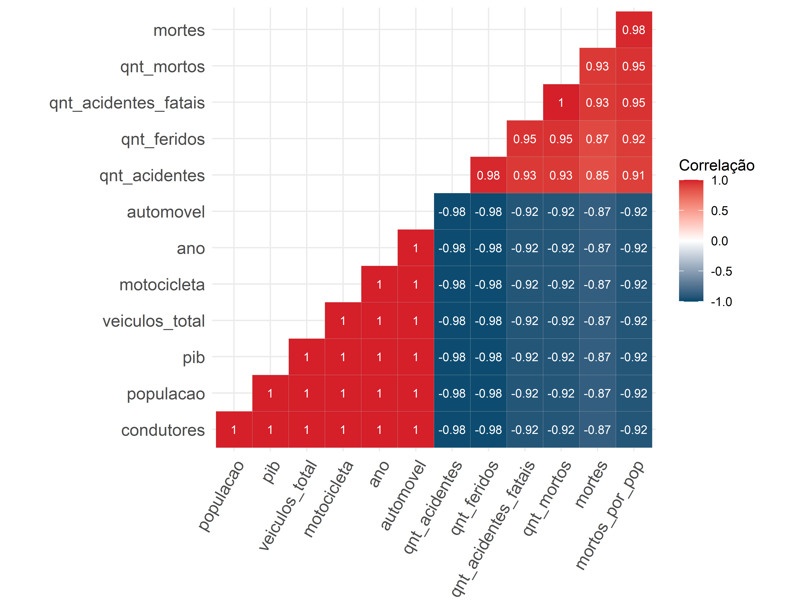
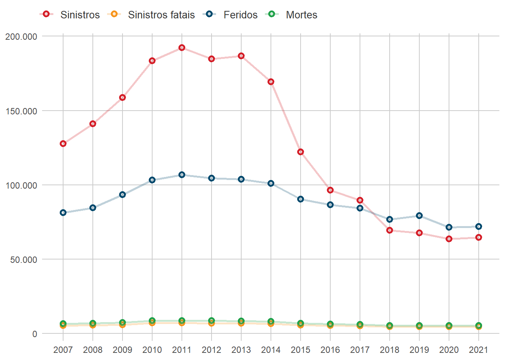
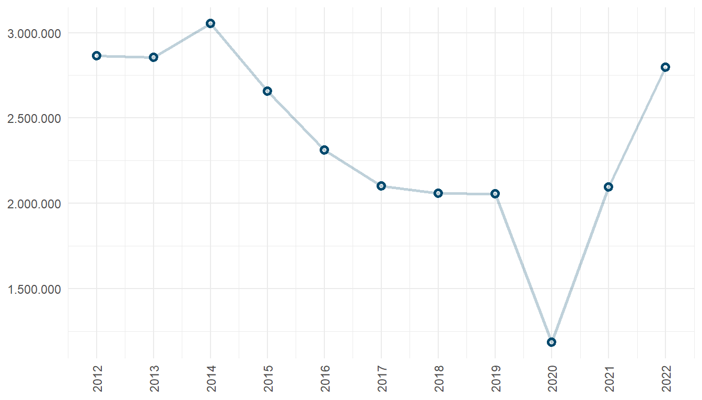
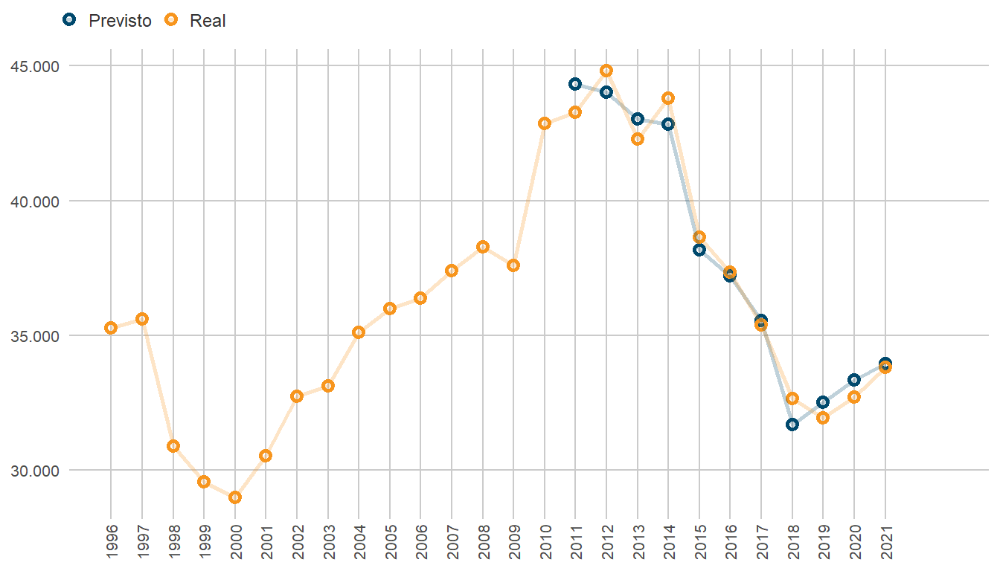
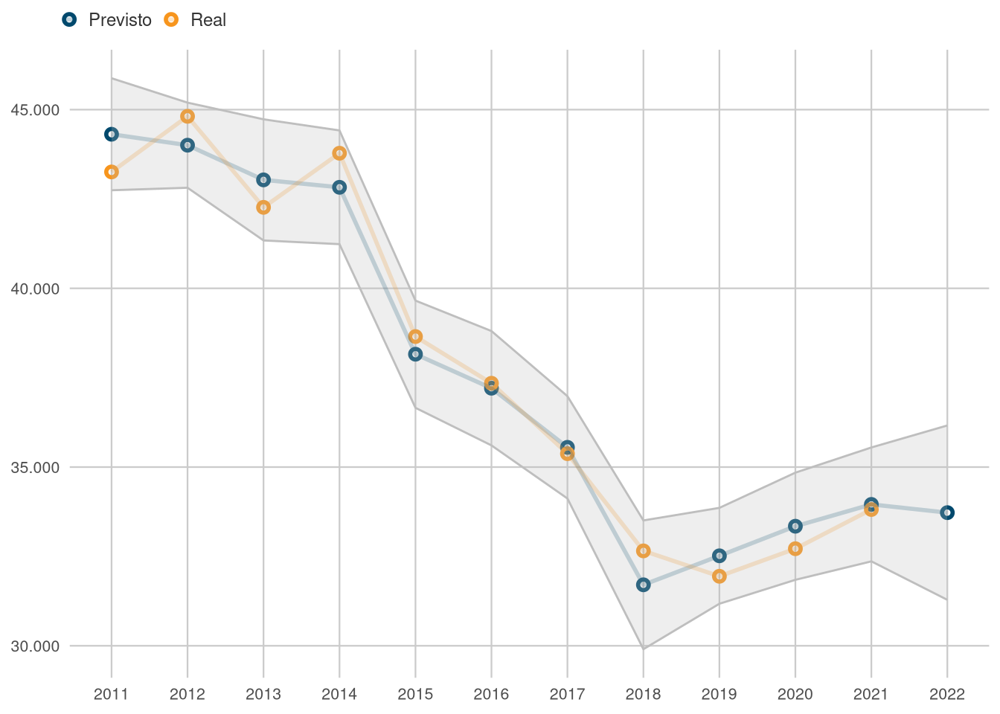
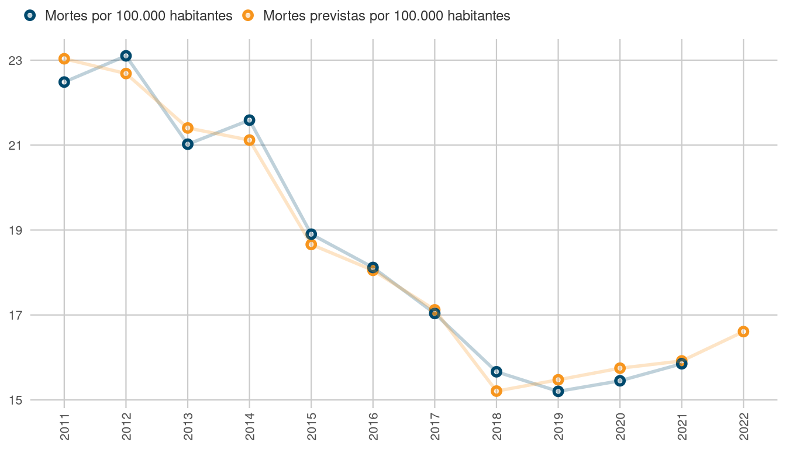
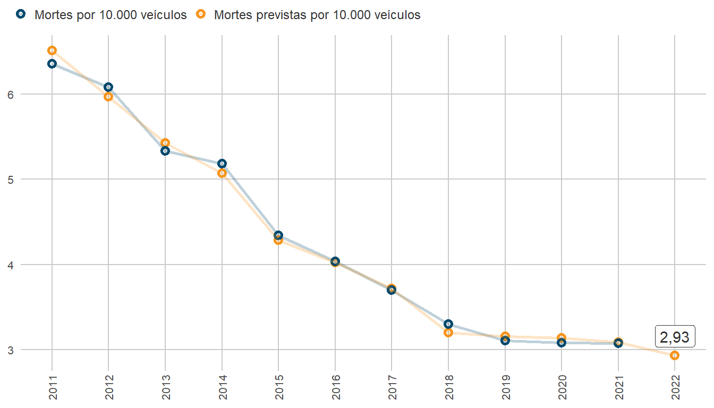
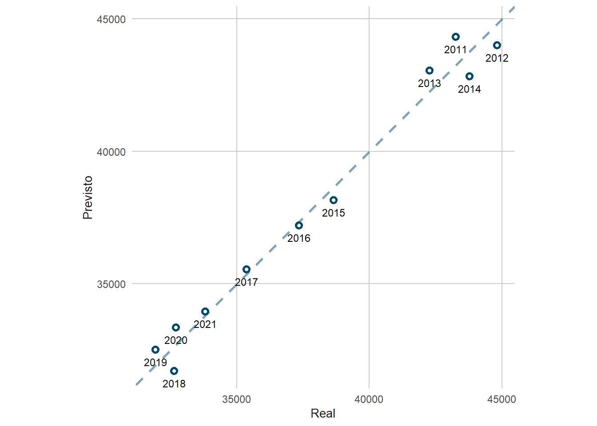

Introdução
O presente cenário mundial acerca de mortes e lesões relacionadas à sinistros de trânsito posam sérios desafios à saúde pública global, e as tendências evidenciadas pelos dados atuais indicam que esta realidade deve continuar a se manter pelo futuro próximo (World Health Organization 2018). Sendo uma das causas de mortes mais comuns no mundo, as ocorrências de sinistros de trânsito afetam principalmente pedestres, ciclistas e motociclistas, além de induzir danos materiais, tanto em questão de propriedade particular quanto pública. Isto estimula países a buscarem métodos estimativos sobre os efeitos sociais, econômicos e epidemiológicos da taxa de mortes no trânsito e como se traduzem em custos e perdas na produtividade da sociedade em geral (Rodríguez, Jattin, e Soracipa 2020).
A segurança viária pode se correlacionar ao estado de desenvolvimento de uma região, visto que é uma característica da mobilidade urbana. Entende-se que as mortes no trânsito dependem de diversos fatores estruturais, socioeconômicos e ambientais (Zhong-xiang et al. 2014). Assim, elevadas taxas de sinistros colaboram no diagnóstico de problemas da segurança pública geral, despertando o debate político sobre a regulamentação das normas viárias e apontando a carência dos sistemas da união em combater estes eventos.
Apesar da crescente adesão por itens de segurança veicular, os sinistros de trânsito permanecem como um problema de saúde pública, visto que fazem parte de um agravo que repercute por toda a sociedade (Andrade e Antunes 2019), sendo a oitava causa de óbitos em todas as faixas etárias e a principal entre indivíduos de 5 a 29 anos (World Health Organization 2018). Como previsto por modelos prévios à 2020 (Blumenberg et al. 2018), o Brasil apresentou baixo desempenho em cumprir a meta estabelecida pela Primeira Década de Ações pela Segurança no Trânsito. Neste cenário, o Plano Nacional de Redução de Mortes e Lesões no Trânsito (PNATRANS) foi desenvolvido para guiar as ações pela mobilidade segura nacional durante o período da Segunda Década de Ação pela Segurança no Trânsito (Ministério da Infraestrutura 2018), na intenção de aprimorar o desempenho da segurança viária em relação a década passada e se alinhando aos Objetivos de Desenvolvimento Sustentável estabelecidos pela Agenda 2030 da Organização das Nações Unidas (ONU). Para atingir tais metas, o Art. 3º da Resolução Contran Nº 870 relata que o PNATRANS se apoia em seis principais pilares: gestão da segurança no trânsito, vias seguras, segurança veicular, educação para o trânsito, atendimento às vítimas, e normalização e fiscalização (Conselho Nacional de Trânsito 2018).
A busca pela fundamentação técnica para a proposição de políticas públicas a respeito da mobilidade segura fomenta o estudo de diversas categorias de modelos preditivos para a mortalidade no trânsito, tanto para estimar o número de ocorrências quanto para avaliar a influência das variáveis consideradas. Modelos lineares multivariados foram ajustados para extrair tendências sobre os critérios aferidos (Blumenberg et al. 2018; Cai, Zhu, e Yan 2015), assim como modelos preditivos baseados em cadeia de Markov (Seneta 1996; Jin, Zheng, e Geng 2020). Outras abordagens utilizaram técnicas de análise de séries temporais, utilizando métodos como o ARIMA - Modelo Auto-Regressivo Integrado de Médias Móveis (Al-Ghamdi 1995) e redes neurais artificiais (Jafari et al. 2015).
Considerando o presente cenário, este estudo tem como objetivo elaborar um modelo linear de melhor ajuste para a previsão de mortes no trânsito em âmbito nacional no Brasil, investigando dados socioeconômicos, como o Produto Interno Bruto (PIB) e a população, fornecidos respectivamente pelo Instituto Brasileiro de Geografia e Estatística (IBGE) (Instituto Brasileiro de Geografia e Estatística 2023) e pelo Ministério da Saúde (Ministério da Saúde 2023b), tal como dados coletados das bases de dados da Polícia Federal Rodoviária (PRF) (Polícia Rodoviária Federal 2023), do Registro Nacional de Condutores Habilitados (RENACH) (Ministério dos Transportes 2023b), do Registro Nacional de Veículos Automotores (RENAVAM) (Ministério dos Transportes 2023a) e do Sistema de Informação de Mortalidade (SIM) do Ministério da Saúde (Ministério da Saúde 2023a).
Metodologia
A obtenção dos dados de mortalidade foram efetuados através do pacote microdatasus (Saldanha 2023), elaborado para a linguagem R. Coletou-se dados oriundos do período entre 1996 e 2021. Esta escolha de intervalo temporal visa englobar a mortalidade estimada sob o protocolo da CID-10, pelo qual o banco de dados foi adequado ao estudo extraindo apenas as observações de mortes relacionadas a sinistros, ou seja, aquelas que se encaixam entre os códigos “V01” à “V89”.
As demais variáveis foram tratadas e imputadas em uma única tabela:
- Frota de veículos (RENAVAM);
- Frota de motocicletas (RENAVAM);
- Frota de automóveis (RENAVAM);
- PIB (IBGE);
- População (DATASUS);
- Quantidade de sinistros em rodovias federais (PRF);
- Quantidade de sinistros fatais em rodovias federais (PRF);
- Feridos em sinistros ocorridos em rodovias federais (PRF);
- Mortos em sinistros ocorridos em rodovias federais (PRF);
- Quantidade de condutores habilitados (RENACH).
Em razão da ausência de dados prévios à 2011 de certas fontes, o intervalo de estudo foi reduzido para 2011 a 2021.
Assim sendo, a análise exploratória dos dados (AED) foi produzida para efetivar a validade dos dados e a significância delas para a construção do modelo. É observável que diversas variáveis possuem alto grau de colinearidade entre si, indicando que a modelagem utilizando todos os atributos poderia ser afetada por uma multicolinearidade, assim, podendo resultar em um modelo com baixa performance. A correlação de Spearman foi utilizada e seus resultados estão apresentados à seguir na Figura 1
As variáveis foram avaliadas em relação a sua frequência e densidade. Considerou-se que, em geral, elas possuem comportamentos que devaneiam da normalidade em questão de suas distribuições de probabilidade. Por este motivo, o método mais adequado utilizado para o cálculo dos coeficientes de correlação foi o de Spearman, visto que é uma medida não-paramétrica. Em seguida, cada variável foi testada com um modelo linear, considerando a quantidade de mortes como variável dependente para encontrar seus \(p\)-valores e métricas de erro quando investigadas individualmente.
Desta forma, a próxima etapa inclui a engenharia dos atributos para a otimização do modelo. O estudo inferencial mostra como diversas variáveis consideradas possuem alta colinearidade, congruente com as relações reais que uma categoria de dado têm com a ocorrência de outro. Por exemplo, a quantidade de mortes em sinistros de trânsito é diretamente correlacionada com a quantidade de sinistros fatais, que por sua vez é correlacionada com a quantidade de sinistros totais. As três variáveis, em adição à quantidade de feridos, estão apresentadas na série temporal da Figura 2 à seguir.

Outra variável que deve ser analisada individualmente é o número de condutores, que possui uma alta correlação com a população e um comportamento similar em questão da sua contribuição ao modelo. Para verificar se o número de condutores possui um acréscimo homogêneo ao longo do período estudado, calcula-se a quantidade de novos condutores por ano, como visto na Figura 3, denotando como o ano de 2020 sofreu uma brusca queda de novos indivíduos, possivelmente devido aos impactos da pandemia. Em relação à variável população, os condutores oferecem melhores valores nas métricas de funcionamento.

Os atributos altamente colineares de menor influência nas predições são deletados do conjunto de dados a fim de preservar a capacidade de generalização do modelo, mitigando os efeitos de um possível sobreajuste. A quantidade de mortos em rodovias federais foi considerada uma variável redundante, sendo removida tal qual o PIB, a população e a quantidade de feridos, as quais foram consideradas menos atuantes na precisão dos resultados.
Após a seleção das variáveis de melhor desempenho, a base de dados foi padronizada a fim de otimizar sua performance e estabilidade no momento de ajuste do modelo de regressão linear. Os coeficientes da regressão linear multivariada estão apresentados à seguir:
| Variável | Coeficiente | P-valor |
|---|---|---|
| Intercepto | 37.874 | 0,00 |
| Sinistros fatais em rodovias federais | 8.159 | 0,04 |
| Frota de veiculos | 13.852 | 0,22 |
| Condutores habilitados | -15.134 | 0,23 |
| Sinistros em rodovias federais | -4.689 | 0,24 |
Resultados e Discussão
Devido ao fato de que a quantidade de dados é reduzida, é inviável a aplicação de técnicas de avaliação de modelo como a separação de conjuntos para treino e teste ou a validação cruzada (Cross validation). Por outro lado, a capacidade do algoritmo regressivo pode ser mensurada pelo comparação entre os dados de mortes iniciais com o produto encontrado pelo modelo, conforme apresentado na Figura 4.

O modelo foi utilizado para prever a ocorrência de mortes relacionadas à sinistros de trânsito em 2022, recebendo como input os respectivos dados das bases anteriormente consultadas. A predição aponta a tendência anual das mortes, com limites de erro considerados em um intervalo de confiança, conforme apresentado na Figura 5. O valor previsto para 2022, com base no modelo efetuado, resultou em 33.725 mortes, com um intervalo de confiança entre 31.286 e 36.164 mortes.

Os métodos selecionados para medir o desempenho do modelo foram a Raiz Quadrada do Erro Médio (Root Mean Squared Error - RMSE), o Erro Médio Absoluto (Mean Squared Error - MAE) e o R-quadrado - \(R^2\). Investigando as métricas de erros com base na comparação do conjunto de dados gerado ao inicial, têm-se:
| Métrica | Valor |
|---|---|
| RMSE | 687,68 |
| MAE | 607,86 |
| R² | 0,98 |
A gravidade do número de mortes e a qualidade da predição podem ser transparecidos pelo cálculo das taxas de mortos por habitantes e por veículos, com o propósito de observar suas tendências. A Figura 6 explicita a crescente taxa de mortes no trânsito em função da população:

A taxa de mortes por veículos, como mostrada na Figura 7, demonstra uma queda progressiva significativa, um possível indício do aumento desproporcional da frota de veículos em relação as mortes no trânsito:

A Figura 8 a seguir apresenta uma comparação entre os dados de mortes previstos e reais.

O valor obtido da previsão implica em uma leve queda de 7,4% no número de mortes em relação ao ano anterior (2021), que registrou 33.813 casos. Conforme a análise dos dados, 2021 foi o segundo ano consecutivo a dispor de um aumento em fatalidades no trânsito. O intervalo de confiança mostra como este pode ser o caso de 2022 novamente, não obstante da diminuição prevista para as mortes. Ademais, é notável que apesar da intensidade das correlações dos preditores selecionados para o estudo, a resolução temporal anual permanece como um gargalo para a análise dos sinistros de trânsito, já que a disponibilidade de dados é reduzida.
Conclusão
O modelo de regressão desenvolvido permite inferir que há uma tendência perceptível nas mortes causadas pelo trânsito. Mesmo que as previsões demonstrem que há a possibilidade de redução no ano subsequente, é visível que a predição do modelo linear ajustado está substancialmente distante do número de casos de 2019, este sendo o ano com a maior redução nas mortes desde o pico em 2012. Isto revela um potencial relaxamento no desempenho da segurança viária e mobilidadea segura à nível nacional, desencadeiando em uma redução em sua eficiência e causando um aumento na mortalidade em sinistros de trânsito.
É fundamental destacar que a abordagem de problemas de segurança viária não depende apenas de variáveis de mobilidade urbana. Existem diversos fatores de infraestrutura e socioeconômicos que afetam a saúde deste sistema, podendo variar com o estado de desenvolvimento e maturidade tecnológica do país em questão. A mobilidade urbana é uma parte integral à toda civilização moderna, o que torna as ações para a segurança viária indispensáveis.
O cenário atual da segurança viária brasileira anuncia alguns desafios e deficiências que podem impactar na conquista das metas de redução estabelecidas em âmbito nacional pelo PNATRANS. Os dados previstos anunciam uma performance abaixo do ideal no combate da mortalidade, conferindo uma perspectiva pessimista para o início da nova década no Brasil e, caso este cenário não seja amenizado com antecedência, é improvável haverem avanços significativos nos objetivos da Segunda Década de Ação pela Segurança no Trânsito.
Referências
Al-Ghamdi, Ali S. 1995. «Time Series Forecasts for Traffic Accidents, Injuries, and Fatalities in Saudi Arabia». Journal of King Saud University - Engineering Sciences 7 (2): 199–217. https://doi.org/10.1016/S1018-3639(18)30627-5.
Andrade, Flávia Reis De, e José Leopoldo Ferreira Antunes. 2019. «Tendência do número de vítimas em acidentes de trânsito nas rodovias federais brasileiras antes e depois da Década de Ação pela Segurança no Trânsito». Cadernos de Saúde Pública 35 (8): e00250218. https://doi.org/10.1590/0102-311x00250218.
Blumenberg, Cauane, Rafaela C Martins, Janaína Calu Costa, e Luiza I C Ricardo. 2018. «Is Brazil Going to Achieve the Road Traffic Deaths Target? An Analysis about the Sustainable Development Goals». Injury Prevention 24 (4): 250–55. https://doi.org/10.1136/injuryprev-2017-042473.
Cai, Hao, Dunyao Zhu, e Lixin Yan. 2015. «2015 International Conference on Transportation Information and Safety (ICTIS)». Em, 363–69. Wuhan, China: IEEE. https://doi.org/10.1109/ICTIS.2015.7232140.
Conselho Nacional de Trânsito. 2018. «RESOLUÇÃO CONTRAN Nº 870», janeiro. https://www.in.gov.br/en/web/dou/-/resolucao-contran-n-870-de-13-de-setembro-de-2021-345797892.
Instituto Brasileiro de Geografia e Estatística. 2023. «Contas Nacionais Trimestrais», setembro. https://sidra.ibge.gov.br/acervo#/S/Q.
Jafari, Seyed Ali, Sepideh Jahandideh, Mina Jahandideh, e Ebrahim Barzegari Asadabadi. 2015. «Prediction of Road Traffic Death Rate Using Neural Networks Optimised by Genetic Algorithm». International Journal of Injury Control and Safety Promotion 22 (2): 153–57. https://doi.org/10.1080/17457300.2013.857695.
Jin, Xiaohua, Jiyu Zheng, e Xingyue Geng. 2020. «Prediction of Road Traffic Accidents Based on Grey System Theory and Grey Markov Model». International Journal of Safety and Security Engineering 10 (2): 263–68. https://doi.org/10.18280/ijsse.100214.
Ministério da Infraestrutura. 2018. «Plano Nacional de Redução de Mortes e Lesões no Trânsito», janeiro. https://www.gov.br/transportes/pt-br/assuntos/transito/arquivos-senatran?b_start:int=60.
Ministério da Saúde. 2023a. «Mortalidade desde 1996 pela CID-10», setembro. https://datasus.saude.gov.br/mortalidade-desde-1996-pela-cid-10.
———. 2023b. «População residente», setembro. https://datasus.saude.gov.br/populacao-residente.
Ministério dos Transportes. 2023a. «Frota de Veículos - 2022», setembro. https://www.gov.br/transportes/pt-br/assuntos/transito/conteudo-Senatran/frota-de-veiculos-2022.
———. 2023b. «Registro Nacional de Condutores Habilitados», setembro. https://www.gov.br/transportes/pt-br/assuntos/transito/conteudo-Senatran/estatisticas-quantidade-de-habilitados-denatran.
Polícia Rodoviária Federal. 2023. «Dados Abertos da PRF», setembro. https://www.gov.br/prf/pt-br/acesso-a-informacao/dados-abertos/dados-abertos-da-prf.
Rodríguez, Javier, Jairo Jattin, e Yolanda Soracipa. 2020. «Probabilistic Temporal Prediction of the Deaths Caused by Traffic in Colombia. Mortality Caused by Traffic Prediction». Accident Analysis & Prevention 135 (fevereiro): 105332. https://doi.org/10.1016/j.aap.2019.105332.
Saldanha, Raphael. 2023. Microdatasus: pacote para download e pré-processamento de microdados do Departamento de Informática do SUS (DATASUS). https://github.com/rfsaldanha/microdatasus.
Seneta, E. 1996. «Markov and the Birth of Chain Dependence Theory». International Statistical Review / Revue Internationale de Statistique 64 (3): 255. https://doi.org/10.2307/1403785.
World Health Organization. 2018. Global Status Report on Road Safety 2018. Geneva: World Health Organization. https://apps.who.int/iris/handle/10665/276462.
Zhong-xiang, Feng, Lu Shi-sheng, Zhang Wei-hua, e Zhang Nan-nan. 2014. «Combined Prediction Model of Death Toll for Road Traffic Accidents Based on Independent and Dependent Variables». Computational Intelligence and Neuroscience 2014: 1–7. https://doi.org/10.1155/2014/103196.